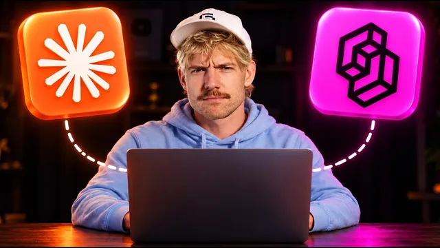

Claude + Jev, 역대 가장 싼 에이전트 OS

원본 영상 보기 →
- 싼 모델은 '분류기'로 쓸 때 가장 쓸모 있다
- 비싼 모델 앞에 싼 모델을 문지기로 세운다
- 읽지 못하는 것은 다른 싼 모델이 먼저 글로 바꿔 준다
한 줄 요약
Jack Roberts가 매우 빠르고 저렴한 새 모델 Jev(자막상 표기)를 자신의 에이전트 운영체제에 붙여, 이메일 분류·음성 비서·릴스 편집·청구서 확인·의미 검색까지 실제로 돌려 보여준다. 이 모델은 글을 길게 쓰는 대신 A냐 B냐를 고르고 점수를 매기는 분류기로 쓸 때 가장 값어치가 크다고 한다.
전체 내용 정리
Jev는 빠르고 싸며, 어떤 요청을 어디로 보낼지 스스로 결정한다
Jack에 따르면 Jev는 Astra보다 40% 저렴하고 훨씬 빠른 새 모델이다. 댓글 생성, 인스타그램 릴스용 소재 식별, 이메일 발송, 품질 확인, 랜딩 페이지 작업까지 다양하게 쓴다. 예를 들어 "이 강의는 어디서 신청하나요?"라는 문장이 들어오면 Jev가 1초도 안 돼 "구매자"라고 판단한다. 같은 일을 Opus 5.5에 시키면 그보다 조금 더 걸렸다고 한다. 또 질문을 자체 웹사이트 기능으로 처리할지, Claude에 넘길지, 어떤 모델로 보낼지도 스스로 정한다. 음성 비서에게 Opus 5.5보다 얼마나 빠른지 물었더니 작업에 따라 다르지만 평균 20% 정도라고 답했다.
받은 편지함을 실시간으로 분류하고 청구서를 몇 초 만에 훑는다
데모 이메일이 담긴 받은 편지함에서 'Jev로 정렬'을 누르면 답장, 뉴스레터, 청구, 커뮤니티 리드, 스폰서, 참고용으로 순식간에 나뉜다. 청구서 확인도 같은 방식이다. 여러 청구서를 몇 초 만에 훑어 무엇을 결제해야 하고 무엇을 확인해야 하는지 표시하고, 새 은행 정보 같은 위험 신호도 짚어 준다. Jack은 사람이 직접 하는 것보다 훨씬 빠르다고 강조한다.
음성 비서 자비스는 Fish Audio 음성으로 시스템을 조작한다
Jack은 운영체제에 Fish Audio를 연동해 '자비스'라는 음성 비서를 만들었다. "메모리 시스템으로 이동해줘", "지금 Claude 사용량이 얼마나 남았지?" 같은 말에 화면을 열거나 5시간 실행 시간의 약 57%, 주간 총량의 약 83%가 남았다고 답한다. 개발자 페이지에서 API 키를 만들어 연결하면 되고, 음성 모델은 2.1이 가장 좋았다고 한다. 속도와 유머 모드, 시스템 프롬프트도 설정할 수 있다. 음성 복제부터 릴스 제작용 효과음까지 하나의 API로 처리하는 것이 장점이다.
릴스 편집도 이 운영체제에서 처리한다
운영체제 안의 '새 릴 만들기'에서 영상을 고르면 잡음을 줄이고 음성을 또렷하게 만들거나, 멈춘 구간을 잘라내거나, Fish Audio 효과음을 넣는 등의 작업을 고를 수 있다. 원하는 요구 사항을 직접 적을 수도 있고, "가장 좋은 걸 골라줘"라며 Jev에게 판단을 맡길 수도 있다. 에너지, 첫 1초, 브랜드 일관성, 시각적 위계 같은 기준으로 무엇이 더 좋은 결과인지, 그 이유까지 알려준다. 그래픽은 Opus 5.5로 만들었고, Jack은 이 결과물 수준에 깊은 인상을 받았다고 한다.
이미지 검색·취향 검사·분류가 Jev의 진짜 강점이다
Jev는 이미지를 직접 읽지는 못한다. 그래서 매우 저렴한 모델로 컴퓨터의 이미지를 훑어 설명문을 만들어 두고, 그 설명문을 Jev가 걸러 검색한다. 이미지 메타 설명에 '버거'라는 단어가 없어도 "버거"로 검색하면 버거 사진이 나온다. 만든 페이지가 너무 흔한 AI 디자인인지 예/아니오로 검사하는 취향 검사도 가능하다.
Jev는 세 가지 답만 준다: 둘 중 하나, 예/아니오, 점수
Jack이 정리한 Jev의 작동 방식은 세 가지다. 하나는 A와 B 중 고르기, 다른 하나는 예/아니오 판단, 마지막은 점수 매기기다. 출력 토큰 비용이 0달러이고 입력 토큰 비용도 매우 낮아서 모든 시스템에 분류 모델로 붙이라고 한다. 예를 들어 "이 리뷰가 가짜인가?", "이 잠재 고객이 유망한가?", "이 텍스트가 사기인가?", "게시해도 안전한가?", "이건 비즈니스 비용인가, 어느 팀이 이 티켓을 처리해야 하나?" 같은 질문에 쓸 수 있다.
전체 구축 방법은 커뮤니티 강의로 안내한다
이 에이전트 운영체제를 내려받거나 만드는 방법은 Jack의 커뮤니티 안 'Clutter Code Masterclass' 과정에 담겨 있다고 한다. 이번 주에 새 디자인 시스템으로 업데이트할 예정이다. 이 영상은 시연 위주이고, 비즈니스 전반에 Jev를 적용하는 구체적 방법은 영상 뒷부분에서 다룬다고 예고하며 끝난다. 다만 확보된 자막에는 그 뒷부분이 포함돼 있지 않다.
핵심 인사이트
- 싼 모델은 '분류기'로 쓸 때 가장 쓸모 있다: 글을 잘 쓰는 능력이 아니라 A/B 선택, 예/아니오, 점수만 뽑아도 이메일 분류·청구서 확인·검색 같은 일이 충분히 자동화된다.
- 비싼 모델 앞에 싼 모델을 문지기로 세운다: 요청을 싼 모델이 먼저 보고 직접 처리할지 Claude에 넘길지 정하면 속도와 비용이 함께 줄어든다.
- 읽지 못하는 것은 다른 싼 모델이 먼저 글로 바꿔 준다: 이미지를 설명문으로 미리 바꿔 두면 이미지가 텍스트 검색 대상이 된다.
오늘 당장 해볼 것
- 하루에 반복해서 "이건 어디로 보내야 하지?" 고민하는 것(받은 문의, 청구서, 예약 요청)을 세 가지 골라 분류 항목을 적어 본다.
- 쓰고 있는 AI 도구에서 가장 저렴한 모델로 그 항목을 "이 문의는 A인가 B인가"로 분류시켜 보고, 정답률을 눈으로 확인한다.
- 외주 업체나 개발자에게 자동화를 맡긴다면 "분류·검색 같은 단순 판단은 저렴한 모델로, 어려운 판단만 비싼 모델로 나눠 달라"고 요청한다.